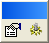
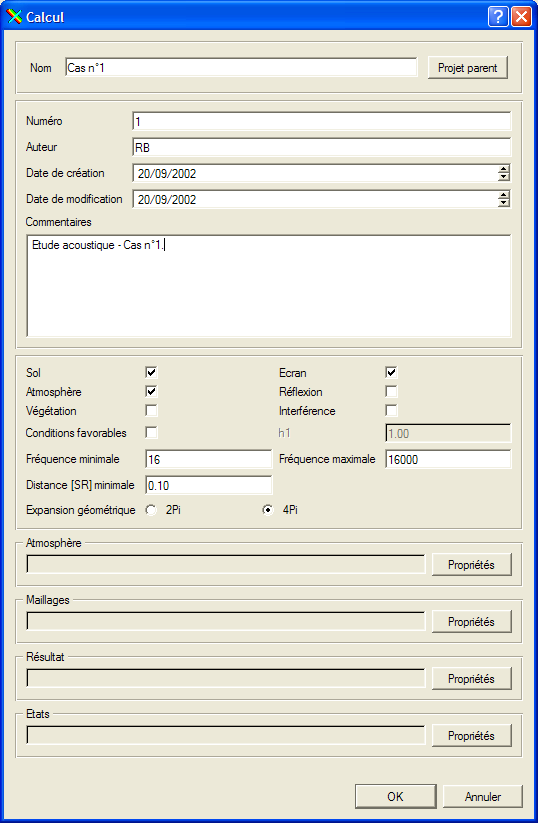

La barre d'outils Calcul est composée de 2 actions, toute les 2 liées au calcul courant du projet courant. Le projet courant de l'espace de travail correspond au projet ouvert dans la fenêtre de gestion de projet.
La première action permet d'accéder à la boîte de dialogue d'édition des paramètres du calcul courant :

La seconde action lance le calcul courant. L'état d'avancement du calcul est signalé dans une fenêtre par une barre de progression et les messages sont affichés dans la fenêtre de messages.